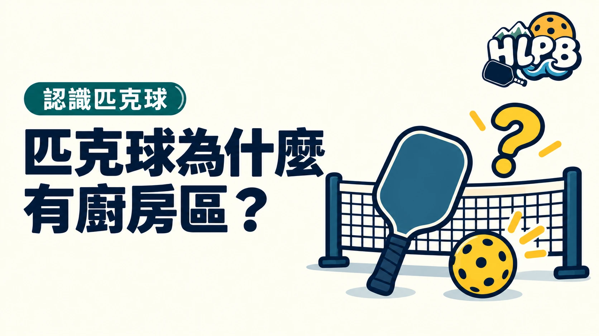

「廚房區」是非截擊區的俗稱，英文常叫 Kitchen。它指的是球網兩側各 7 英尺的區域。第一次聽到這個名字，先知道它對應哪個區域，就比較容易理解球友在說什麼。
三個名稱，其實指同一個區域
| 名稱 | 意思 |
|---|---|
| 非截擊區 | 規則中的區域名稱。 |
| Non-Volley Zone／NVZ | 英文名稱及縮寫。 |
| Kitchen／廚房區 | 球友常用的俗稱。 |
為什麼偏偏叫 Kitchen？
本次查閱的 USA Pickleball 官方規則摘要確認了這個俗稱，但沒有交代名稱由來。因此，這篇不把流傳的故事寫成已確定的歷史。
名字記住了，規則也別搞反
截擊是球還沒落地就擊回。非截擊區限制的是截擊，不是禁止進入。區域的界線也算在非截擊區內。
- 可以進入區內回擊已落地的球。
- 截擊時不能碰到非截擊區或其界線。
- 截擊後因慣性進入區內，同樣可能犯規。
廚房區不是禁入區，重點是不能在區內截擊。
來源：USA Pickleball 規則摘要。查證：2026/10/8。
最後查證：2026-10-08｜資料來源：USA Pickleball
返回文章列表